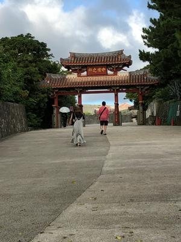

うるがいの話 ある日
最新:
二千円札
うるがいとは 前提知識です
カニの画像をクリックすると『うるがいの話』サイトを表示します

うるがい(ｳﾙｶﾞｲ urugai)とは、『もずくがに』の名前でとても大きくなります。

たながー（ﾀﾅｶﾞｰtanagaa）とは手長えびのことで、何種類かあり大きいのは車
エビぐらいになります。

ぶながー(bunagaa)とは、赤い髪の毛、赤い身体、そして身長は１ｍ２０ｃｍ
ぐらい、川の蟹を食べているの目撃された。場所は沖縄県国頭郡大宜味村のと
ある村僕の隣近所に住んでいる爺さんから、聞いた話です。
2021年07月05日 (月）二千円札
15:55

これが、二千円札に印刷されている守礼の門ですか？、ん！、こんな質問する
のか・・・、なぜか声は出ず、頷いて回答する。昨日、守礼の門をくぐり抜け
て数メートル、向かいから坂を門に向かった観光客らしき、男性と女性二人の
三名に呼び止められる。時たま、トンでもない質問をされることがある、そん
なときでもニッコりと答えることにしている。暑い！、昨日から、本格的に暑
い。夏だな、クラーと着けず、汗をかきながら耐えている。